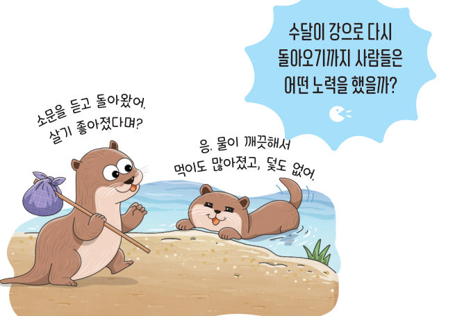
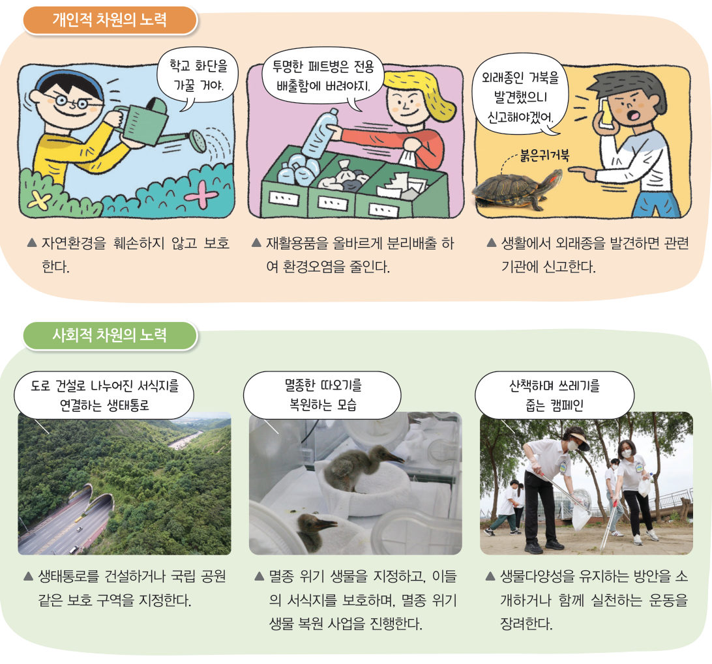
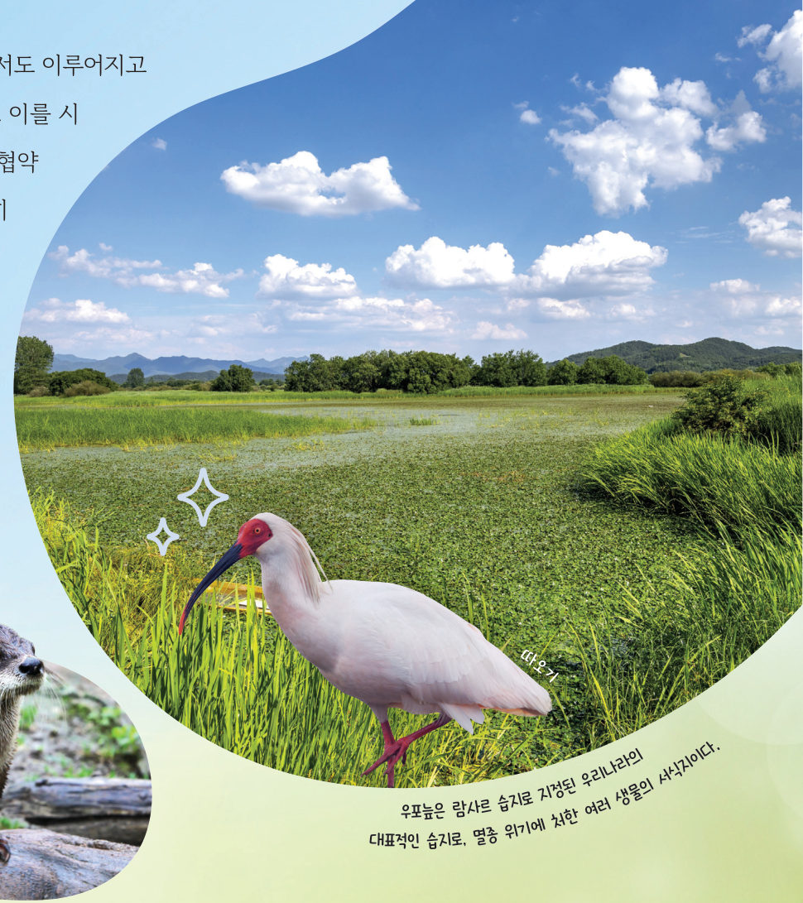

생물다양성보전을
위한 노력
“살기 좋아졌다며 소문을 듣고 돌아왔어.” “응. 물이 깨끗해서 먹이도 많아졌고, 덫도 없어.” 수달이 강으로 다시 돌아오기까지 사람들은 어떤 노력을 했을까? 가상 도로에 생태통로를 놓아 보고, 나만의 실천 계획을 세워 생물다양성을 지켜 보자.
생물다양성은 어떻게 유지할 수 있을까?
수달, 반달가슴곰, 따오기와 같은 생물은 한때 사라질 위기에 처했으나 지금은 수가 늘어나고 있다. 이는 개인과 사회가 생물다양성을 유지하기 위해 꾸준히 노력한 결과이다.
- 자료 수집 생물다양성 유지를 위한 개인적 차원과 사회적 차원의 방안을 조사한다.
- 조사 결과를 바탕으로 실천 기간과 횟수, 준비물, 실천 장소, 구체적 실천 내용을 포함하여 나만의 실천 계획서를 작성한다.
- 실천 계획서에 따라 실천하며 기록한 다음, 실천 결과를 모아 발표한다.
| 개인적 차원의 생물다양성 유지 방안 | 사회적 차원의 생물다양성 유지 방안 |
|---|---|
| · 일회용품 대신 다회용품을 사용한다. · 야생 동물을 함부로 기르지 않는다. | · 국립 공원을 지정하여 보호한다. · 생물다양성과 관련된 교육을 무료로 제공한다. |
| 실천 기간·횟수 | |
| 준비물 | |
| 실천 장소 | |
| 구체적 실천 내용 |
다르게 해 보기 · 지역 사회의 생물다양성 유지 활동 참여하기
지역 사회에서 이루어지고 있는 생물다양성 유지 활동에 참여하고, 지속적으로 참여할 수 있는 활동에는 어떤 것이 있을지 토의해 보자.
생물다양성을 유지하기 위해 개인과 사회가 실천할 수 있는 방안은 그림 2-17과 같이 여러 가지이다. 이러한 방안은 짧은 기간 실천하는 것만으로는 충분한 효과를 거두기 어렵다. 따라서 생물다양성에 꾸준히 관심을 두고, 생물다양성을 유지하여 다음 세대에 전해줄 수 있도록 삶 속에서 지속적으로 노력해야 한다.


생물다양성보전을 위한 노력은 국제 사회에서도 이루어지고 있다. 생물다양성보전과 관련된 국제 협약에는 ‘생물다양성협약’, ‘물새 서식지로서 특히 국제적으로 중요한 습지에 관한 협약(람사르 협약)’, ‘멸종 위기에 처한 야생 동식물의 국제 거래에 관한 협약’이 대표적이다. 우리나라도 이러한 국제 협약에 가입하고 적극 참여하여 국제 사회와 발맞춰 노력하고 있다.
[개인적 차원 — 보기: 외래종, 보호, 분리배출] 자연환경을 훼손하지 않고 한다. 재활용품을 올바르게 하여 환경오염을 줄인다. 생활에서 을 발견하면 관련 기관에 신고한다.
[사회적 차원 — 보기: 보호 구역, 캠페인, 멸종 위기 복원 사업] 생태통로를 건설하거나 국립 공원 같은 을 지정한다. 멸종 위기 생물을 지정하고, 서식지를 보호하며, 을 진행한다. 생물다양성을 유지하는 방안을 소개하거나 함께 실천하는 을 장려한다.
⑨ 토종 얼룩소 키우기, 우리 밀 살리기 → ( ) 차원
⑩ 생태통로에 대한 설명으로 옳은 것을 모두 고르면
3생물다양성 유지 방안
· 사회적 차원의 노력: 건설하기, 멸종 위기 생물 지정 및 복원하기, 캠페인 진행하기 등
생물다양성보전은 모든 생명체가 지구에서 함께 살아가는 데 매우 중요하다. 생물다양성보전의 중요성을 알리는 방법으로 놀이를 활용할 수 있다. 모둠별로 생물다양성보전 놀이를 설계하고, 놀이를 이용하여 생물다양성보전과 관련한 내용을 주변에 널리 알려 보자.
| 평가 기준 | 스스로 평가 |
|---|---|
| 지식·이해 생물다양성보전의 필요성과 생물다양성이 감소하는 원인을 설명할 수 있는가? | |
| 과정·기능 생물다양성을 보전하기 위한 방법을 직접 실천할 수 있는가? | |
| 가치·태도 생물다양성의 소중함을 공감했는가? | |
| 놀이를 통해 생물다양성과 관련된 내용을 알리고, 고려할 점을 지켜 놀이를 설계하였는가? | |
| 과학적 언어로 자신의 생각을 표현하고, 친구의 의견을 집중하여 들었는가? |